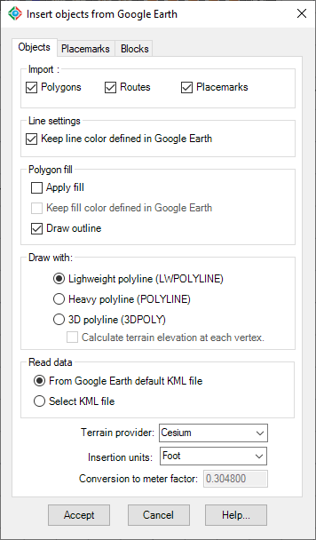
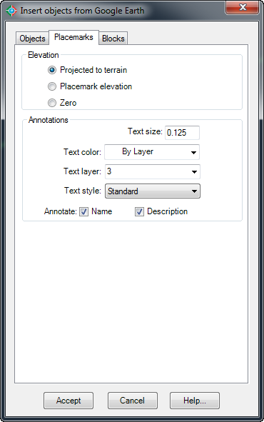
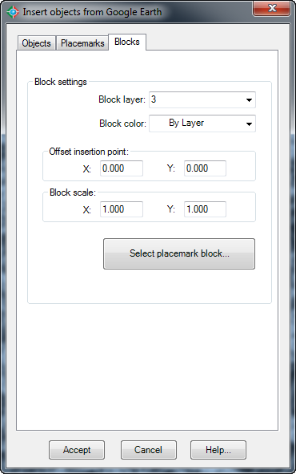
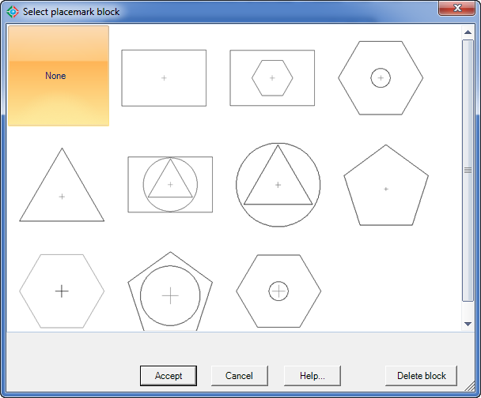
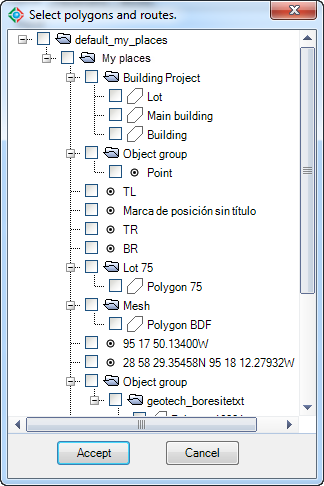

|
|
Toolbar:
Menu: CAD-Earth > Insert objects from Google Earth
|
|
|
Command line: CE_INSGEOBJ
CAD-Earth version: Basic, Plus, Premium. |
.png)
.png)
Command description:
Objects can be inserted in AutoCAD selecting polygons, routes and placemarks from Google Earth. Polygons can be inserted as 2D or 3D polylines projected to terrain, optionally applying fill color. Placemarks can be imported as blocks with elevation, including placemark name and description. A Symbol Library is included where you can select the placemark block to be inserted, or you can add your own blocks.
You don't have to georeference your drawing before using this command because the Google Earth objects selected already contain geographic information.
A dialog box will be displayed where you can select Google Earth polygons, routes and placemarks to be inserted in the drawing.
Dialog box settings (Objects tab):

Insert objects from Google Earth (Objects tab)
ØImport:
•Polygons. Imported polygons from Google Earth to AutoCAD will be drawn as closed polylines.
•Routes. Imported routes from Google Earth to AutoCAD will be drawn as open polylines.
•Placemarks. Imported placemarks from Google Earth to AutoCAD will be drawn as points and block inserts.
ØLine settings
•Keep line color defined in Google Earth. If you deselect this option objects will be imported to AutoCAD and will be drawn using the current color.
ØPolygon fill:
•Apply fill. A solid hatch will be applied to polygons when imported to AutoCAD.
•Keep color defined in Google Earth. If you deselect this option a solid hatch using the current color will be applied to polygons when imported, otherwise the fill color they had in Google Earth will be used.
•Draw outline. If hatching will be applied to the imported polygons, you can choose not to draw their outline.
ØDraw with:
•Lightweight polyline. Imported polygons and routes will be drawn with regular polylines in AutoCAD.
•Heavy polyline. Imported polygons and routes will be drawn with heavy polylines in AutoCAD.
•3D polyline. Imported polygons and routes will be drawn with 3D polylines in AutoCAD, which can have different Z elevations in each vertex.
•Draw vertices with Z elevations. Elevation in each vertex will be calculated to draw imported objects with 3D polylines.
ØRead data.
•From Google Earth default KML file. Data will be read from the 'myplaces.kml' Google Earth file.
•Select KML file. Data will be read from a KML file selected by the user.
ØTerrain provider. Select to import terrain point elevations from Cesium or directly from Google Earth. This option only has an effect if you select to project vertices to terrain when importing objects.
ØInsertion units. A conversion factor will be applied to scale the objects according to the units selected.
ØConversion to meter factor. When you select an insertion unit the corresponding conversion to meter factor will be displayed. If you wish to edit the conversion factor you must select the Custom unit from the list.
Dialog box settings (Placemarks tab):

Insert objects from Google Earth (Placemarks tab)
ØElevation:
•Projected to terrain. Elevation will be calculated to be on the ground in the placemark's XY position.
•Placemark elevation. Elevation will be the same as the placemark elevation in Google Earth.
•Zero. Elevation will be at sea level (absolute zero)
ØAnnotations:
•Text size. Set placemark's name and description text size in drawing units.
•Text color. Select color for placemark's name and description text.
•Text layer. Select layer for placemark's name and description text.
•Text style. Select text style for placemark's name and description.
•Annotate name. Select to write placemark's name in the drawing.
•Annotate description. Select to write placemark's description in the drawing.
Dialog box settings (Blocks tab):

Import objects from Google Earth (Blocks tab)
ØBlock settings.
•Block layer. Select layer for placemark's block insert when imported to AutoCAD.
•Block color. Select color for placemark's block insert when imported to AutoCAD.
•Offset insertion point. Set displacement of placemark's position in horizontal (X) and vertical (Y) direction in the selected units (meters or feet).
•Block scale. Set scale applied to the placemark's block insert.
•Select placemark block. A dialog box will appear to select the block reference that will be inserted in the placemark's position.

Placemark block library

Dialog box to select Google Earth objects
Tips:
•If you need to place the objects in their corresponding UTM coordinates according to a coordinate system you must use the command to import objects from Google Earth instead.
•You can add custom placemark block inserts using the CAD-Earth's command to make point blocks. A block insert icon will appear in the 'Select placemark block' dialog box the next time you import placemarks from Google Earth.
•Imported polygon polylines can be used to import the corresponding image or terrain configuration to AutoCAD by using the CAD-Earth commands to import a terrain mesh or image from Google Earth.
•If you intend to share Google Earth information you can save to a KML file. This file can be opened by other Google Earth users so they can see your information.
•If you add a polygon, route or placemark in Google Earth you must save the information to the default KML file selecting File > Save > Save My Places so CAD-Earth can read the information from the default Google Earth KML file. Objects must be added to 'My places' folder. You can also close Google Earth and save the changes.
•Google Earth can be closed when importing objects. CAD-Earth reads information from the default KML file (myplaces.kml) or from a KML file supplied by the user to import objects to AutoCAD. If the inserted objects are not shown you can use the AutoCAD ZOOM EXTENTS command to display them on the screen.
•If you press ENTER instead of picking an insertion point the objects will be placed in the corresponding WGS84 UTM coordinates in the drawing. If the inserted objects are not shown you can use the AutoCAD ZOOM EXTENTS command to display them on the screen.
•You can use the AutoCAD UNGROUP command if you wish to edit the imported objects individually.
•NOTE: If you select to get terrain point elevations directly from Google Earth, you must install v7.3.2 64-bit from this link. Google Earth v7.3.3 and above, doesn't expose a programming interface, so it's not compatible with CAD-Earth. To avoid Google Earth being changed to another version, please rename the file C:\Program Files (x86)\Google\Update\GoogleUpdate.exe to C:\Program Files (x86)\Google\Update\GoogleUpdateBackup.exe. Google Earth has a limit of 5000 points per session. If the objects to be imported have more than 5000 vertices, Google Earth will be automatically restarted.
Related topics:
•How to save Google Earth information to a KML file (video).
•How to save information in Google Earth's 'My Places' folder (video)
•Import image from Google Earth
•Insert image from Google Earth
•Import terrain mesh from Google Earth
•Insert terrain mesh from Google Earth
Copyright © 2023 Arqcom Software
Google Earth© is a registered trademark of Google inc. All other trademarks are the property of their respective owners.